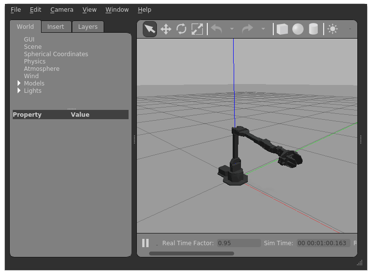

Instrukcja, jak ‘uruchomić’ wirtualne ramię Interbotix vx300s w Linuxie, stack
oraz jak
Pobrać interbotix_ros_gazebo.zip.
$ unzip interbotix_ros_gazebo.zip
$ cd interbotix_ros_gazebo$ docker build -f interbotix_ros_gazebo.Dockerfile -t interbotix_ros_gazebo .# X11 disable access control
$ xhost +
# -p -- komunikacja z ROS master; -v -e -- X11 forwarding
$ docker run -ti -p 11311:11311 -v /tmp/.X11-unix:/tmp/.X11-unix -e DISPLAY=$DISPLAY interbotix_ros_gazebo
# opcjonalnie, sekwencja ctrl-p ctrl-q odłącza (detach) terminalPowinno pojawić się GUI Gazebo - okno X11 z wizualizacją ramienia vx300s:

$ apt install ros-noetic-rospy# Adres ROS master - konfiguracja dla rospy i poleceń shellowych: rosrun, rostopic, ...
# (zmienna poniżej jest już prawdopodobnie ustawiona po instalacji ros-noetic-rospy)
$ export ROS_MASTER_URI=http://localhost:11311
# Dodanie cube.urdf do Gazebo via ROS
# https://classic.gazebosim.org/tutorials?tut=ros_roslaunch
# "ROS Service Call" Robot Spawn Method
$ rosrun gazebo_ros spawn_model -file ./cube.urdf -urdf -x 0 -y -0.4 -z 1 -model cube1
# Dodanie kolejnych czterech kopii cube.urdf - stos sześcianów
$ rosrun gazebo_ros spawn_model -file ./cube.urdf -urdf -x 0 -y -0.4 -z 1 -model cube2
$ rosrun gazebo_ros spawn_model -file ./cube.urdf -urdf -x 0 -y -0.4 -z 1 -model cube3
$ rosrun gazebo_ros spawn_model -file ./cube.urdf -urdf -x 0 -y -0.4 -z 1 -model cube4
$ rosrun gazebo_ros spawn_model -file ./cube.urdf -urdf -x 0 -y -0.4 -z 1 -model cube5
# Przykładowa manipulacja ramieniem vx300s z Pythona
$ python3
>>> import rospy
>>> rospy.init_node('test')
>>> from std_msgs.msg import Float64
>>> waist_controller = rospy.Publisher('/vx300s/waist_controller/command', Float64)
>>> waist_controller.publish(-2.0)
Przedstawione rozwiązanie, jak uruchomić i manipulować ramieniem, tj. jak zintegrować cztery składowe software’owe:
polega na:
rosrun, rostopic, …Do interakcji ze wszystkimi składowymi wystarczy komunikacja z ROS master (= proces / węzeł ROS). Sterowniki Interbotix i symulator Gazebo są zintegrowane z ROSem jako specjalne węzły ROS i można się do nich odwoływać z użyciem mechanizmów komunikacji ROS, tj. ROS topics. ROS master pośredniczy w tej komunikacji.
Integracja ROSa z Gazebo jest standardowa, w oparciu o pakiet ROSa gazebo_ros opakowujący Gazebo, opisany w tutorialach Gazebo Connect to ROS.
Integracja ROSa z ramieniem Interbotix wykorzystuje pakiety ROSa interbotix_xsarm_… dostarczone z Interbotix. Te pakiety definiują różne węzły ROS sterujące ramieniem. Użyty pakiet interbotix_xsarm_gazebo dodatkowo integruje Gazebo, z wykorzystaniem w/w gazebo_ros.
interbotix_ros_gazebo.Dockerfile to:
interbotix_ros_gazebo to gotowa instalacja całego w/w oprogramowaniainterbotix_ros_gazebo to działające środowisko Interbotix vx300s + ROS + GazeboZalety wykorzystnia dockera to (standardowo):
Opcjonalne argumenty do docker run interbotix_ros_gazebo:
takie jak w xsarm_gazebo.launch:
np. paused:=true world_name:=<plik .world>
$ docker run -ti -p 11311:11311 -v /tmp/.X11-unix:/tmp/.X11-unix -e DISPLAY=$DISPLAY \
interbotix_ros_gazebo paused:=true world_name:=<plik .world>.worldworld_name:= do polecenia docker run interbotix_ros_gazebo, jw.Polecenie rostopic pub pozwala na manipulację robotem z shella, np.:
rostopic pub -1 /vx300s/waist_controller/command std_msgs/Float64 "data: 0.5"Polecenie rostopic list pokazuje dostępne topics (= kanały pub/sub, ~ metody RPC), np. /vx300s/waist_controller/command
Docker image interbotix_ros_gazebo buduje (ściąga) się 1-2h i zajmuje ~4.5GB
rosrun (patrz źrodła spawn_model)rospy (biblioteka kliencka) bez ~1GB zbędnych zależności na całym środowisku ROS (np. pobrać źródła ręcznie)